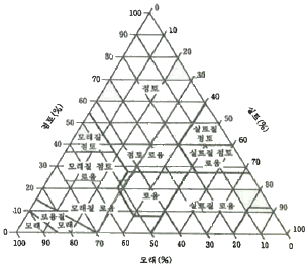
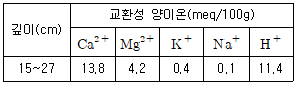
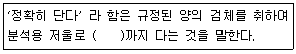
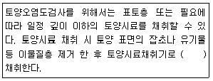
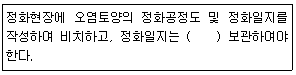

토양환경기사 (2019-03-03 기출문제)
1과목: 토양학개론
1. 2:1 격자형 점토광물 구조의 설명이 옳은 것은?
- 2개의 알루미나판 사이에 1개의 규산판이 삽입된 구조
- 규산판과 마그네슘판 사이에 알루미나판이 삽입된 구조
- 1개의 알루미나판 양쪽에 2개의 규산판이 부착된 구조
- 규산판 2개 다음에 알루미나판이 부착된 구조
(정답률: 71%)

2. 오염 지하수 처리기술 중 air sparging 기술에 대한 설명이 아닌 것은?
- 오염물질의 용해도가 작을수록 적용이 어렵다.
- 오염확산의 위험이 있으므로 불균질매질에 적용이 어렵다.
- 증기압이 0.5mmHh 이상인 오염물질에 적용이 가능하다.
- 공기의 이동경로의 생성을 발해하므로 낮은 투수성의 매질에는 적용이 어렵다.
(정답률: 51%)
3. 지렁이를 이용한 퇴비화(composting)에 의해 처리하기 곤란한 것은?
- 하수 슬러지
- 음식물 쓰레기
- 잔디구장에서 잘라낸 잔디
- 지하수위가 높은 땅 속에 묻혀 있는 분뇨
(정답률: 73%)
4. 인순환에 기여하는 미생물의 역할 중 틀린 것은?
- 난용성 무기형태 인의 용해를 촉진한다.
- 미생물 체내로 PO43-를 흡수한다.
- 미생물 중에 존재하는 인의 양은 토양 중 총인 양의 대부분을 차지한다.
- 유기형태 인의 분해와 그에 따른 PO43-
(정답률: 67%)
5. 토양오염물질 중 DNAPL(dense nonaqueous phase liquid)이 아닌 것은?
- 1, 1, 1-TCA
- TCE
- 클로로페놀
- 톨루엔
(정답률: 77%)
6. 자갈 20%, 모래 25%, 실트 30%, 점토 25%인 토양을 아래 삼각자로 분류법에 의하면 어디에 해당하는가?

- 점토
- 점토 로움
- 모래질 점토 로움
- 실트질 로움
(정답률: 72%)
7. 지구의 6대 조암광물의 구성으로 옳은 것은?
- 석영, 장석, 운모, 감석석, 휘석, 감람석
- 석영, 장석, 운모, 석면, 휘석, 감람석
- 석영, 장석, 석회석, 감섬석, 휘석, 감람석
- 석영, 장석, 황철석, 감섬석, 석고, 감람석
(정답률: 83%)
8. 토양의 연경도를 결정하는 인자가 아닌 것은?
- 아쇄성
- 강성
- 소성
- 경도
(정답률: 63%)
9. 주로 가정하수로부터 농업용 수로로 논에 유입되는 벼의 성장에 지장을 주는 물질은?
- ABS(Alklbenzene sulfonate)
- BHC(Benzene hexachloride)
- DDT(Dichlorodiphenyltichloroethane)
- Parathon
(정답률: 78%)
10. 토양 내에 존재하는 부식물질에 관한 설명으로 틀린 것은?
- 부식탄(부식회, humin)은 알칼리에는 용해되나 산에는 용해되지 않는 물질이다.
- 부식산(humic acid)은 중간 내지 고분자의 산성물질로서 무정형이다.
- 폴브산(fulviic acid)은 저분자의 부식산과 비부식물질이 결합된 것이다.
- 부식물질은 비부식물질에 비하여 구조가 복잡하여 분해에 대한 저할성이 크다.
(정답률: 69%)
11. 다음 표와 깊이에서의 교환성 양이온 농도를 측정하였다. 토양의 수소 및 염기 포화도(%)는?

- 수소포화도=38.1, 염기포화도=61.9
- 수소포화도=61.9, 염기포화도=38.1
- 수소포화도=35.9, 염기포화도=64.1
- 수소포화도=64.1, 염기포화도=35.9
(정답률: 66%)
12. 질산성 질소(No3--N)의 농도가 30mg/L인 경우, NO3-의 농도(mg/L)는?
- 133
- 156
- 164
- 176
(정답률: 59%)
13. 용적밀도가 1.5g/cm3, 중량수분함량이 30%인 토양의 용적수분함량(%)은?
- 12.5
- 20
- 45
- 57.5
(정답률: 75%)
14. 토양오염의 특징과 가장 거리가 먼 것은?
- 오염경로의 단순성
- 피해발현의 완만성
- 오염영향의 국지성
- 오염의 비인지성
(정답률: 79%)
15. 토양공극률 0.42, 토양입자밀도 2.65g/cm3일 때 지역 토양 단위용적밀도(g/cm3)는?
- 1.24
- 1.54
- 1.72
- 1.83
(정답률: 73%)
16. 토양 및 토양오염에 관한 내용으로 적절하지 않은 것은?
- 토양은 일단 그 기능을 상실하면 복원이 불가능하거나, 회복에 매우 긴 시간이 요구된다.
- 토양은 환경의 최종수용체로서 다른 매개체로의 오염유발은 적다.
- 토양오염이란 사업 활동, 기타 사람의 활동에 따라 토양이 오염되는 것으로서 사람의 건강이나 환경에 피해를 주는 상태를 말한다.
- 토양오염은 토양의 기능, 인간의 건강 및 생태계에 악영향을 미치는 것이다.
(정답률: 92%)
17. 토양미생물 중 원핵세포를 가진 미생물은?
- 박테리아(bacteria)
- 토양조류(soil algae)
- 원생동물(protozoa)
- 곰팡이(fungi)
(정답률: 70%)
18. 지하수의 유량을 조사할 때 Darcy의 법칙(Q=KㆍIㆍA)이 사용되는데, 이 때 K와 I가 의미하는 것은?
- k=점성계수, I=수리적 구배
- k=투수계수, I=수심
- k=점성계수, I=경심
- k=수리적전도도, I=수두 구배
(정답률: 86%)
19. 벤젠(분자량 78.1)이 공기와 평행관계에 있을 경우 공기 내 존재할 수 있는 최대농도(mg/m3)는? (단, 1가압, 25℃ 기준, 벤젠의 중기압=0.125atm)
- 약 400000
- 약 450000
- 약 500000
- 약 550000
(정답률: 48%)
20. 토양층위(토양단면)를 위층에서 올바르게 나열한 것은?
- A층-B층-C층-O층
- O층-A층-B층-C층
- O층-C층-B층-A층
- A층-A층-B층-C층
(정답률: 88%)
2과목: 토양 및 지하수 오염조사기술
21. 토양오염공정시험기준상 불소 측정에 적용 가능한 시험방법은?
- 자외선/가시선 분광법
- 원자흡수분광광도법
- 기체크로마토그래프법
- 유도결합플라즈마 원자방광분광법
(정답률: 80%)
22. PCB를 측정하기 위해 기체크로마토그래프를 사용할 때 운반가스의유속(mL/min)은?
- 0.5~3
- 5~10
- 10~20
- 20~50
(정답률: 47%)
23. 과망간산칼륨 10%(W/V) 수용액을 만드는 방법으로 옳은 것은?
- 과망간산칼륨 10g을 물에 녹여 100mL로 한다.
- 과망간산칼륨 15g을 물에 녹여 100mL로 한다.
- 과망간산칼륨 20g을 물에 녹여 100mL로 한다.
- 과망간산칼륨 50g을 물에 녹여 100mL로 한다.
(정답률: 80%)
24. 총칙의 내용으로 ()에 옳은 것은?

- 1.0mg
- 0.1mg
- 0.01mg
- 0.0001mg
(정답률: 76%)
25. 가압시험법 측정오류의 원인으로 가장 거리가 먼 것은?
- 최저 설정압력의 오류
- 시험압력 유지시간이 너무 짧을 때
- 연결관 및 연결부의 오류로 인한 누출
- 측정시간 중 과도한 온도변화에 의한 내용물의 체적 변화
(정답률: 65%)
26. 지하매설저장시설 내 배관으로부터 3m지점에서 토양시료를 채취하였다면 토양시료 채취지점에서 최대한의 시료채취 깊이(m)는?
- 3
- 3.5
- 4
- 4.5
(정답률: 82%)
27. 저장물질이 없는 누출검사대상시설의 누출검사방법 중 가압시험법에 사용되는 기구 및 기기에 관한 설명으로 옳지 않은 것은?
- 온도계는 시험압력에 충분히 견딜 수 있는 것으로서 최소눈금 1℃ 이하를 읽고 기록이 가능해야 한다.
- 압력계는 최소눈금이 시험압력의 5%이내이고, 이를 읽고 측정압력의 기록이 가능한 것을 사용한다.
- 안전밸브는 2.0kgf/cm2 이하에서 작동되어야 한다.
- 사용가스는 가압매체로 질소 등 불활성가스를 사용한다.
(정답률: 82%)
28. 저장물질이 없는 누출검사 대상시설에서 저장시설의 용접부, 모재부에 대한 결합유무를 확인, 누출가능성 유무를 판단하는 시험 방법은?
- 가압 시험법
- 미가압 시험법
- 액면레벨 측정법
- 비파괴 검사법
(정답률: 56%)
29. 일반지역(농경지)의 토양 시료 채취 방법 중 시료채취지점 선정에 관한 내용으로 옳은 것은?
- 대상지역 내에서 나선형으로 5~10개 지점
- 대상지역 내에서 지그재그형으로 5~10개 지점
- 대상지역에서 대표치를 구할 수 있는 1개 지점
- 대상지역의중심 지점과 주변 4방위 총 5개 지점
(정답률: 80%)
30. 증크롬산칼륨용액의 흡광도가 270nm에서 0.745이었다. 이 흡광도 데이터를 투과율(%)로 환산한 것은?
- 12.0
- 15.8
- 18.0
- 21.3
(정답률: 54%)
31. 토양 중 벤조(a)피렌을 분석하기 위해 속슬레추출법을 사용하는 경우 적절한 추출조건은?
- 시간당 3~5싸이클을 유지하면서 24시간 동안 추출
- 시간당 4~6싸이클을 유지하면서 16시간 동안 추출
- 시간당 6~8싸이클을 유지하면서 16시간 동안 추출
- 시간당 7~8싸이클을 유지하면서 18시간 동안 추출
(정답률: 58%)
32. 시료의 채취에 관한 내용으로 ()에 옳은 것은?

- 약 0.1kg
- 약 0.2kg
- 약 0.5kg
- 약 1.0kg
(정답률: 76%)
33. 95% 황산(비중 1.84)의 노말(N) 농도는?
- 10.7
- 25.5
- 35.7
- 40.5
(정답률: 54%)
34. 원자흡수분광광도계의 일반적인 구성 순서로 올바른 것은?
- 광원부→시료원자회부→파장선택부→측광부
- 광원부→ 파장선택부→시료원자화부→측광부
- 광원부→측광부→시료원자화부→화장선택부
- 광원부→측광부→파장선택부→시료원자화부
(정답률: 64%)
35. 토양오염공정시험방법에서 분석대상 유기인계화합물로 규정되지 않은 성분은?
- 알드린
- 이피엔
- 미틸디메톤
- 펜토에이트
(정답률: 62%)
36. 원자흡수분광광도계에 불꽅을 만들기 위해 조연성 가스와 가연성 가스를 사용하는데 일반적으로 사용하는 가연성 가스와 조연성 가스의 조합은?
- 수소-공기
- 아세틸렌-공기
- 프로판-공기
- 아세틸렌-이산화질소
(정답률: 73%)
37. 정량한계 산정 식으로 옳은 것은? (단, S=표준편차, X=평균값)
- 정량한계=3.3×S
- 정량한계=(10×X)/S
- 정량한계=(3.3×X)/S
- 정량한계=10×S
(정답률: 81%)
38. 검량선에서 얻어진 TPH의 검출량이 1550.5ng 이었을 때 토양 중 TPH의 농도(mg/kg)는? (단, 수분 보정한 토양무게=26.5g, 용매의 최종액량=2mL, 검액의 주입량=2μℓ)
- 58.5
- 68.7
- 48.5
- 75.8
(정답률: 50%)
39. 토양의 pH를 측정하기 위해서 토양과 산을 포함하는 정제수의 비율로 적절한 것은? (단, 토양의 밀도(비중)는 1.0은 아님)
- 토양시료의 무게에 5배의 정제수를 사용
- 토양시료의 부피에 5배의 정제수를 사용
- 토양시료의 무게에 2배의 정제수를 사용
- 토양시료의 부피에 2배의 정제수를 사용
(정답률: 75%)
40. 기체크로마토그래프법으로 TPH를 정량하는 방법에 대한 설명으로 옳지 않은 것은?
- 검출기는 불꽃이온화검출기(FID)를 사용한다.
- 비등점이 높은 벙커C유ㆍ윤활유ㆍ유원유 등의 측정에는 적용하지 않는다.
- 토양시료 중의 TPH 성분은 디클로로멘탄으로 추출한다.
- 정량한계는 석유계충탄화수소로 50mg/kg이다.
(정답률: 67%)
3과목: 토양 및 지하수 오염정화 기술
41. 투수성반응벽체법의 충진물질로서 국내ㆍ외에서 가장 많이 활용되고 있는 것은?
- 활성탄
- 석회석
- 영가철
- 제올라이트
(정답률: 57%)
42. 열탈착공정의 일반적인 구성장치가 아닌 것은?
- 고에너지 스크러버
- 열 교환기
- 열 건조기
- 발열반응기
(정답률: 55%)
43. 열처리 기술에 대한 설명으로 틀린 것은?
- 저온 열탈착은 유기물을 분해하지 않는다.
- 고온 열탈착은 871~1204℃로 가열하는 공정이다.
- 중금속으로 오염된 토양을 처리하는 데에도 효과가 뛰어나다.
- 준휘발성 유기화합물 처리에 있어 다른 기술보다 경제성이 떨어진다.
(정답률: 48%)
44. 토양세척공장에 대한 설명으로 틀린 것은?
- 미세토양 부식물질의 혼합률 30% 이하를 경제적 한계로 본다.
- 세척장치는 기능별로 회전형, 교반형, 진동형, 유동산형으로 분류한다.
- 토양내의 오염물을 세척수와 화학적 마찰력을 위주로 이용하여 분리하는 기술이다.
- 세척 후 발생되는 오염 미세토양 및 처리수에 대한 후처리를 고려해야 한다.
(정답률: 51%)
45. 암반, 점토 등과 같이 누수성이 매우 낮아 토양세척 등의 공법을 직접 적용하기 어려운 경우에 물리적인 힘을 가하여 지반에 균열을 발생시켜 투수성을 증가시키는 효과적인 방법은?
- 계면활성제주입공법
- 동전기주입공법
- 스팀주입공법
- 수압파쇄공법
(정답률: 78%)
46. 토양증기추출 시스템 처리효율에 영향을 미치는 오염물질 특성 인자와 가장 거리가 먼 것은?
- 증기압
- 수분함량
- 헨리상수
- 흡착계수
(정답률: 45%)
47. 고온 열탈착 공법(HTTD)에 관한 내용과 가장 거리가 먼 것은?
- 큰 입경의 토양을 정기적으로 운전하면 시설을 손상시킬 수 있다.
- 점토, 휴민산을 많이 함유한 토양은 오염물질과 단단히 결합되어 반응시간이 길어진다.
- 적절한 토양함수비를 맞추기 위한 가수분해과정이 필요하다.
- 방사능물질이나 독성물질로 오염된 토양으로부터 오염물질을 분리하는 데 적용할 수 있다.
(정답률: 64%)
48. 식물에 의한 안정화(phtostabilization)처리에 적합한 식물의 특징이 아닌 것은?
- 대상 오염물질에 대한 높은 내성을 갖고 있어야 한다.
- 뿌리 부분의 수분함량이 커야 한다.
- 뿌리 부분의 생체량(biomass)이 커야 한다.
- 오염물질을 뿌리로부터 지상부(shoot)로 이동시키지 않고 뿌리 내에 함유하는 능력이 커야 한다.
(정답률: 70%)
49. 기름으로 오염된 지하수를 1000m3/day의 유량으로 추출하여 처리하고자 한다. 기름분리를 위한 중력부상식 유수분리조의 최소 표면적(m2)은? (단, 기름 입경=0.3mm, 기름 밀도=0.92g/cm3, 물 밀도=1.0g/cm3, 물 점성도 0.01g/cmㆍsec, Stokes의 법칙 이용)
- 2.95
- 13.29
- 26.4
- 32.9
(정답률: 28%)
50. 점토모양 중 양이온교환 능력이 가장 높은 것은?
- 일라이트
- 몬모릴로나이트
- 클로라이트
- 카로리나이트
(정답률: 72%)
51. 토양, 지하수를 정화하는 식물정화법 중 식물에 의한 추출을 효과적으로 이룰 수 있는 대표 식물종으로 가장 거리가 먼 것은? (단, 중금속 기준)
- 인도겨자
- 해바라기
- 버드나무
- 보리
(정답률: 70%)
52. 토양증기추출법에 대한 설명으로 옳지 않은 것은?
- 휘발성 오염물질의 처리에 적합한 지중처리 방식이다.
- 토양 내 포화지역 및 불포화지역에 적용이 가능하다.
- 점토질 토양에 적용 시 효율이 떨어진다.
- 추출가스 처리를 위한 설비가 필요하다.
(정답률: 69%)
53. 매립지 토양층에서 발생하는 혐기성분해에 의해 100g의 glucose(C6H12O6)가 완전히 분해되어 발생되는 토양층에서의 메탄가스 용적(L)은? (단, 토양층에서 1mol 메탄가스의 용적=25L)
- 약 22
- 약 32
- 약 36
- 약 42
(정답률: 30%)
54. 오염토양 열처리프로세스 중 장치 용적에 비해 열전달 표면적이 넓고, 같은 처리용량의 장치에 비해 크기가 작고, 열전단효율이 높고, 고형물의 온도가 최대허용 가능한 열전달 유체의 온도에 의해 제한되는 것은?
- 로터리탈착장치
- 열스크류
- 유동상탈착장치
- 마이크로파 탈착장치
(정답률: 73%)
55. 바이오스파징(biosparging)의 장ㆍ단점에 대한 설명으로 틀린 것은?
- 시설이 비교적 간단함
- 지하수의 부가적인 처리가 필요함
- 지상의 영업 및 활동에 방해 없이 정화작업 수행이 가능함
- 휘발보다 생분해가 주요 제거메카니즘이므로 배출가스처리가 필요 없을 수 있음
(정답률: 54%)
56. 오염지역의 지하수 수두구배 0.003, 수리 전도도 10-5cm/sec. 지하수위 지표하 10m. 지하수 유입단면적 300m2일 때, 오염풀림으로 유입되는 지하수의 유입 유량(L/min)은?
- 5.4×10-2
- 5.4×10-3
- 5.4×10-4
- 5.4×10-5
(정답률: 45%)
57. 유류오염 토양 중 열탈착 (적정)온도가 가장 높은 것은?
- 난방유
- 경유
- 휘발유
- 등유
(정답률: 56%)
58. 독립영양미생물(화학합성-자가영양)의 탄소원과 에너지원을 바르게 짝지은 것은?
- CO2-무기물의 산화환원반응
- CO2-빛
- 유기탄소-무기물의 산화환원반응
- 유기탄소-빛
(정답률: 69%)
59. 식물복원공정(Phytoremediation) 기법에 속하지 않는 것은?
- 식물추출(Phytoextraction)
- 식물안정화(Phytostabiliztion)
- 근권분해(Rhizodegradation)
- 생물증대(Bioaugmentation)
(정답률: 75%)
60. 지중내 오염운(contaminated plume) 폭 100m, 포화대수층두께 50m, 지반의 평균수리 전도도 0.0036m/h, 동수구배 0.7m/m인 경우 지중 오염운을 이동시키는데 사용된 지하수의 유량(m3/h)은? (단, Darcy의 법칙을 이용)
- 388.8
- 97.2
- 25.7
- 12.6
(정답률: 51%)
4과목: 토양 및 지하수 환경관계법규
61. 환경부장관은 토양오염관리대상시설에 대한 조사계획을 매년 수립해야 한다. 이 때 포함되어야 할 사항으로 틀린 것은?
- 조사일정
- 조사순서
- 조사기준
- 조사범위
(정답률: 58%)
62. 대통령령으로 정하는 오염토양의 정화방법이 아닌 것은?
- 미생물을 이용한 생물학적 처리
- 오염물질의 분해 등 방사능 철
- 오염물질의 소각 등 열적 처리
- 오염물질의 차단 등 물리적 처리
(정답률: 57%)
63. 토양정화업자의 준수사항으로 ()에 옳은 것은?

- 1년간
- 2년간
- 3년간
- 4년간
(정답률: 50%)
64. 규정을 위반하여 대책지역 안에서 특정수질 유해물질, 폐기물, 유해화학물질, 오수ㆍ분뇨 또는 가축분뇨를 버린 자에 대한 과태료 부과기준은?
- 100만원 이하
- 200만원 이하
- 300만원 이하
- 400만원 이하
(정답률: 51%)
65. 수질검사전문기관은 수질검사의 기록에 대한 보존 및 보고의 의무를 갖는다. 이에 해당하는 내용으로 가장 적합한 것은?
- 1년간 보존, 매 분기 종료일의 다음달 말일까지 보고
- 2년간 보존, 매 분기 종료일로부터 2달 이내 보고
- 1년간 보존, 매 분기 종료일로부터 2달 이내 보고
- 2년간 보존, 매 분기 종료일의 다음달 말일까지 보고
(정답률: 61%)
66. 토양환경보전법의 규정에 의하여 환경부 장관이 고시하는 측정망설치계획에 포함되지 않는 것은?
- 측정망 설치시기
- 측정망 배치도
- 측정지점의 위치 및 면적
- 측정망 폐쇄시기
(정답률: 79%)
67. 지하수오염평가보고서의 작성내용과 가장 거리가 먼 것은?
- 지하수오염으로 인한 위해성
- 오염범위
- 오염원인에 대한 평가
- 원상복구계획
(정답률: 68%)
68. 특정토양오염관리대상시설의 변경신고 사항과 가장 거리가 먼 내용은?
- 사업장 명칭 변경
- 대표자 변경
- 사업장 관할 지자체장 변경
- 특정토양오염관리대상시설에 저장하는 오염물질 변경
(정답률: 72%)
69. 토양보전대책지역 지정표지판에 기록할 내용으로 틀린 것은?
- 지정일자
- 토양보전대책지역에서 제한되는 행위
- 지정기관 및 전화번호
- 지정목적
(정답률: 64%)
70. 토양관련전문기관의 지정기준 중 토양오염 조사기관 장비에 해당되지 않는 것은?
- 가연성가스농도측정기
- 가스크로마토그래프 질량분석기
- 초음파추출장치
- 퍼지ㆍ트랩장치
(정답률: 44%)
71. 정당한 사유 없이 관계 공무원 또는 토양관련전문기관의 직원의 행위를 방해 또는 거절 한 자에 대한 과태료 처분 기준은?
- 100만원 이하
- 200만원 이하
- 300만원 이하
- 500만원 이하
(정답률: 53%)
72. 토양환경보전법에서 명시한 토양보전에 관한 기본계획의 수립 시기는?
- 3년마다
- 5년마다
- 7년마다
- 10년마다
(정답률: 75%)
73. 특정토양오염관리대상시설에 대한 토양오염 검사면제 승인을 할 수 있는 경우와 가장 거리가 먼 것은?
- 특정오염관리대상시설 중 송유관 시설로서 유류의 유출여부를 확인할 수 있는 장치가 설치된 경우
- 토양시추를 할 수 없는 지반 또는 건물지하등에 설치되어 토양시료의 채취가 불가능하다고 토양오염조사기관이 인정하는 경우
- 저장시설에 1년 이상 토양오염물질을 저장하지 아니한 경우 등 토양관련 전문기관이 토양오염검사가 필요하지 아니하다고 인정하는 경우
- 특정토양오염관리대상시설의 설치자가 전체 시설의 사용을 종료하거나 이를 폐쇄하고자 하는 경우
(정답률: 51%)
74. 토양오염도의 상시측정에 대한 법적 규정 중 틀린 것은?
- 환경부장관은 전국적인 토양오염실태를 차악하기 위하여 측정망을 설치하고 토양오염도를 상시측정하여야 한다.
- 측정망 설치계획은 고시되어야하며, 누구든지 열람할 수 있게 하여야 한다.
- 측정말 설치 최소 6월 전에는 측정망설치계획이 고시되어야 한다.
- 측적망 설치계획에는 측정망설치시기, 측정망배치도, 측정지점 위치 및 면적이 포함되어야 한다.
(정답률: 58%)
75. 토양관련전문기관 또는 토양정화업의 기술 인력의 보수교육 기준으로 ()에 옳은 것은?
- ㉠ 1년간, ㉡ 12시간
- ㉠ 3년간, ㉡ 24시간
- ㉠ 3년간, ㉡ 12시간
- ㉠ 5년간, ㉡ 8시간
(정답률: 72%)
76. 토양환경보전법에 의한 위해성평가 시 허용 가능한 초과발암위해도의 범위는?
- 10-2~10-3
- 10-3~10-4
- 10-4~10-5
- 10-5~10-6
(정답률: 50%)
77. 지하수관리기본계획에 포함되지 않는 사항은?
- 온천수
- 용천수
- 제주도지역 지하수
- 먹는샘물
(정답률: 66%)
78. 손실보상을 청구하고자 하는 자는 손실보상 청구서에 손시에 관한 증빙서류를 첨부하여 환경부장관, 시ㆍ도지사, 시장ㆍ군수ㆍ구청장 또는 토양관련전문기관의 장에게 제출하여야 한다. 손실보상청구서에 기재할 사항에 해당되지 않는 것은?
- 청구인의 성명ㆍ생년월일 및 주소
- 손실을 입은 일시 및 장소
- 손실의 내용
- 손실액과 그 예산 및 집행방법
(정답률: 70%)
79. 토양환경보전법상 토양관리전문기관이 토양오염도 조사 중 타인에게 손실을 입힌 때에 대한 설명으로 틀린 것은?
- 손실보상을 청구하고자 하는 자는 손실보상청구서와 증빙서류를 토양관련전문기관의 장에게 제출한다.
- 손실보상청구서에는 손실액의 산출방법이 포함된다.
- 손실보상청구에 대한 협의가 성립되지 아니한 경우 손실을 입은 자는 환경부장관에게 재결을 신철할 수 있다.
- 손실보상청구 협의에 대한 재결을 받아들이지 아니한 자는 중앙토지수용위원회에 이의를 신청할 수 있다.
(정답률: 53%)
80. 특정토양오염관리대상시설의 설치자는 대통령령이 정하는 바에 따라 토양오염을 방지하기 위한 시설을 설치하고 관리하여야 한다. 이를 위반하여 토양오염방지시설을 설치하지 아니한 자에 대한 벌칙 기준은?
- 1년 이하의 징역 또는 1천만원 이하의 벌금
- 2년 이하의 징역 또는 2천만원 이하의 벌금
- 3년 이하의 징역 또는 3천만원 이하의 벌금
- 5년 이하의 징역 또는 5천만원 이하의 벌금
(정답률: 49%)